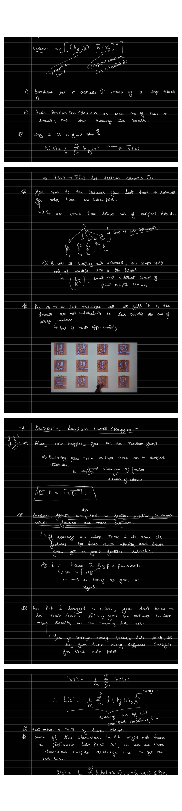

Bagging & Random Forests
Deep decision trees have low bias on flexible patterns, but small changes to the training rows can alter an early split and cascade through every leaf below it. The scan motivates ensembles through that sensitivity. Keep two averages conceptually distinct throughout: averaging predictions across $B$ fitted trees on one dataset, and averaging across hypothetical training datasets drawn from the population to define statistical variance.
Variance describes changing predictions across training sets
Fix a single query input $x_0$. Imagine drawing fresh training datasets $\mathcal D^{(1)}, \mathcal D^{(2)}, \dots$ from the underlying data-generating distribution, fitting one tree $\hat T$ on each dataset, and recording its prediction $\hat T(x_0)$. The expected squared spread of $\hat T(x_0)$ around its population mean $\mathbb E[\hat T(x_0)]$ is the estimator's pointwise variance $\sigma^2 = \operatorname{Var}\bigl(\hat T(x_0)\bigr)$.
If $B$ identically distributed tree predictions $\hat T_1(x_0), \dots, \hat T_B(x_0)$ each have variance $\sigma^2$ and pairwise correlation $\rho \in [0, 1]$, the variance of their ensemble average $\bar T(x_0) = \frac{1}{B}\sum_{b=1}^B \hat T_b(x_0)$ is:
Here $B$ is the number of trees, $\sigma^2$ is each individual tree's prediction variance at $x_0$, and $\rho$ is the average pairwise correlation between two bootstrap trees' predictions across repeated training sets. Increasing $B$ shrinks the second term $\frac{1-\rho}{B}\sigma^2$ toward zero, leaving the correlation floor $\rho\sigma^2$. Reducing spread also leaves systematic bias unchanged: if every tree aims at the wrong mean, their average hits that wrong mean more reliably.
Resample the available rows and trace one query $x_0$
In practice we observe only one training dataset $\mathcal D$ of $n$ rows. Bootstrap aggregation (bagging) draws $B$ samples of size $n$ with replacement from $\mathcal D$. Because each draw selects a given row with probability $1/n$, the probability that row $i$ is never picked in $n$ draws is $(1 - 1/n)^n \to e^{-1} \approx 0.3679$, so roughly $63.2\%$ of unique rows appear in a typical resample while about $36.8\%$ remain out-of-bag (OOB).
Resamples are independent conditional on the observed dataset $\mathcal D$, not unconditionally independent draws from the true population. As $B \to \infty$, $\bar T(x_0)$ converges to the conditional expectation $\mathbb E_*[\hat T(x_0) \mid \mathcal D]$, which still carries randomness from $\mathcal D$ itself—explaining why $\rho > 0$ and why the law of large numbers does not drive test error to zero.
To make bootstrap instability and averaging concrete, take five ordered training rows $(x_i, y_i)$: Row 1 $= (1, 2)$, Row 2 $= (2, 4)$, Row 3 $= (3, 8)$, Row 4 $= (4, 10)$, and Row 5 $= (5, 12)$. Fit an exact squared-error regression stump (one threshold $x < t$ chosen from midpoints of distinct sampled $x$ values) to four size-5 bootstrap resamples, and evaluate every stump at query point $x_0 = 2.8$:
| Bootstrap Tree $b$ | Sampled Row IDs | OOB Rows | Optimal Stump Rule | Prediction $\hat T_b(2.8)$ | Deviation $\hat T_b - \bar T$ |
|---|---|---|---|---|---|
| Tree 1 | [1, 1, 2, 2, 4] |
$\{3, 5\}$ | $x < 3.0 \to 3.0$; else $10.0$ | 3.00 | $-4.50$ |
| Tree 2 | [1, 1, 3, 4, 5] |
$\{2\}$ | $x < 2.0 \to 2.0$; else $10.0$ | 10.00 | $+2.50$ |
| Tree 3 | [1, 2, 3, 3, 3] |
$\{4, 5\}$ | $x < 2.5 \to 3.0$; else $8.0$ | 8.00 | $+0.50$ |
| Tree 4 | [1, 1, 1, 3, 4] |
$\{2, 5\}$ | $x < 2.0 \to 2.0$; else $9.0$ | 9.00 | $+1.50$ |
| Ensemble ($B=4$) | Mean $\bar T(2.8) = \frac{1}{4}(3.0 + 10.0 + 8.0 + 9.0)$ | 7.50 | Spread: $\frac{1}{4}\sum (\hat T_b - \bar T)^2 = 7.25$ (SD $2.69$; sample SD $3.11$) | ||
Notice why Tree 1 disagrees sharply with Trees 2–4 at $x_0 = 2.8$: Row 3 $(3, 8)$ happened to be omitted from Tree 1's resample, shifting the midpoint boundary between $x=2$ and $x=4$ up to $t = 3.0$. Consequently $x_0 = 2.8$ falls into Tree 1's left leaf ($3.0$) instead of the right leaf ($8.0$–$10.0$). Averaging across resamples turns that hard threshold jump into the intermediate prediction $\bar T(2.8) = 7.50$.
Synthetic teaching illustration: 14 noisy piecewise-shifted curves fluctuate around a dashed sine reference. The bold green curve is their exact running average.
Randomize candidate features at each split
When one predictor is much stronger than the others, nearly every bagged tree splits on that same predictor at the root, producing highly correlated trees ($\rho$ stays large). A random forest breaks this structural lockstep: at each internal node, it draws a fresh uniform random subset of $m_{\text{try}} \le p$ candidate features and searches splits only within that subset.
Lowering $m_{\text{try}}$ creates a deliberate trade-off: decorrelating the trees lowers $\rho$, but hiding useful features can weaken individual trees (raising per-tree bias or $\sigma^2$, especially when many features are pure noise). Common defaults—$m_{\text{try}} = \lfloor\sqrt{p}\rfloor$ for classification and $m_{\text{try}} = \lfloor p/3\rfloor$ for regression—are practical starting heuristics rather than universal optima; tune $m_{\text{try}}$ via validation or out-of-bag error.
Combine held-out predictions before measuring error
To compute an out-of-bag (OOB) score without a separate validation split, evaluate each training row $i$ using only the subset of trees $\mathcal B_{-i} = \{b : i \notin \mathcal D^{*(b)}\}$ whose bootstrap sample omitted row $i$. Aggregate those held-out predictions into a single OOB committee prediction $\hat y_i^{\text{OOB}}$ first, then compute row $i$'s loss, and finally average across rows with $|\mathcal B_{-i}| > 0$.
Order of operations matters because convex losses satisfy Jensen's inequality. Suppose two OOB trees predict $2$ and $4$ for a row with true target $y_i = 3$: the OOB ensemble prediction is $(2+4)/2 = 3$, giving squared error $0$. Averaging the individual tree errors $\frac{1}{2}\bigl((2-3)^2 + (4-3)^2\bigr) = 1$ measures single-tree error rather than forest error. Keep in mind that OOB scoring still leaks information if feature scaling, imputation, or feature selection was fit on the full dataset prior to bootstrapping.
Read feature scores and uncertainty with care
Mean Decrease in Impurity (MDI) sums training split gains across nodes, which systematically inflates high-cardinality continuous or categorical features that offer more cut points. Prefer held-out permutation importance when measuring predictive reliance, and remember that empirical spread across bootstrap trees reflects resampling sensitivity rather than a calibrated prediction interval.


Reproduce the 4-bootstrap-tree table in Python
import numpy as np
X = np.array([1.0, 2.0, 3.0, 4.0, 5.0])
y = np.array([2.0, 4.0, 8.0, 10.0, 12.0])
resamples = [
[0, 0, 1, 1, 3], # rows [1, 1, 2, 2, 4], OOB {3, 5}
[0, 0, 2, 3, 4], # rows [1, 1, 3, 4, 5], OOB {2}
[0, 1, 2, 2, 2], # rows [1, 2, 3, 3, 3], OOB {4, 5}
[0, 0, 0, 2, 3], # rows [1, 1, 1, 3, 4], OOB {2, 5}
]
x0 = 2.8
preds = []
for b, idx in enumerate(resamples, start=1):
xb, yb = X[idx], y[idx]
uniq = np.unique(xb)
best = min(
(
((yb[xb < 0.5*(a+c)] - yb[xb < 0.5*(a+c)].mean())**2).sum()
+ ((yb[xb >= 0.5*(a+c)] - yb[xb >= 0.5*(a+c)].mean())**2).sum(),
0.5*(a+c),
yb[xb < 0.5*(a+c)].mean(),
yb[xb >= 0.5*(a+c)].mean(),
)
for a, c in zip(uniq[:-1], uniq[1:])
)
_, thr, left_val, right_val = best
pred = left_val if x0 < thr else right_val
preds.append(pred)
print(f"Tree {b}: x < {thr:.1f} -> {left_val:.2f} else {right_val:.2f} | T_{b}({x0}) = {pred:.2f}")
preds = np.array(preds)
print("Ensemble mean:", preds.mean(), "Pop var:", preds.var(), "Sample SD:", preds.std(ddof=1))For a complete five-row OOB table with row-by-row eligible committees, continue to the out-of-bag evaluation chapter or the Bagging series overview.
Sources and next steps
- Cornell CS 4780: Bagging — Lecture companion for bootstrap resampling and variance reduction.
- Breiman (2001): Random Forests — Strength-correlation bounds and out-of-bag estimation.
- scikit-learn: Permutation Importance — Why impurity importance and held-out predictive reliance differ.